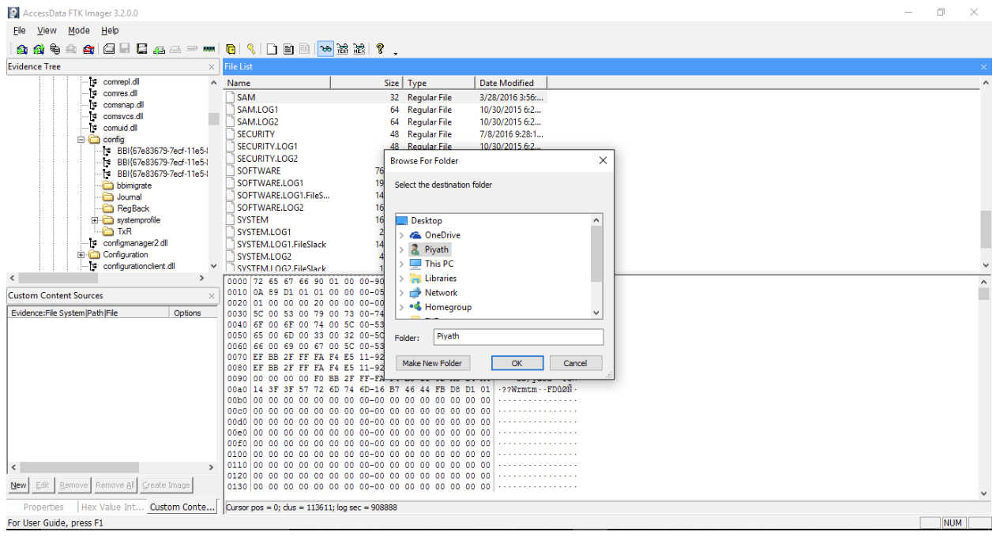

The topics that will be discussed today range from the technical side to the legal side of digital forensics. Forensics is defined as “the application of science to legal problems and investigations.” Digital Forensics therefore is “a branch of forensics involving the recovery and investigation of digital evidence.” In general, a key forensic principle is following the scientific method. This includes making keen observations, forming a hypothesis, experimenting, analyzing the results, and finally drawing conclusions and reporting. In addition, there are four key aspects that must be adhered to:
It is crucial to understand the characteristics of evidence. Not only is it important to collect evidence, but the way it is collected is important as well. Without the proper techniques, the evidence could be altered even without intention and thus cannot be used as proof in a legal case. Evidence is defined as “the trace left behind when two entities interact in some way”. We then dove into methods of preserving the integrity of evidence. These include creating a cryptographic hash of the entire disk and each partition being examined, locking the original disk in a limited-access container, and comparing the hash of the copy with the original.
Another important topic relating to evidence is “Chain of Custody”. This is essentially a documentation of every person who has handled the evidence of a case. This is important to ensure who has handled the evidence as well if there are any doubts that may arise on the integrity of the evidence. Insufficient documentation may cause the evidence gathered to be inadmissible, therefore hurting the case.
This leads to another important topic - Incident Response. This process involves six key steps:
The cybersecurity world revolves around three pillars: Confidentiality, Integrity, and Availability. Digital Forensics touches upon evidence integrity and forensic soundness. Locard’s Exchange Principle states that “when any two objects come into contact, there is always transference of material from each object onto the other”. In terms of evidence integrity, once a piece of evidence is contaminated, it will remain contaminated as the evidence is now compromised. Therefore, it is very crucial to handle any evidence gathered with care or it cannot be used as proof. An interesting concept that was brought up was pulling the plug of a machine versus powering it off. Powering down the system can destroy critical evidence, where attackers take advantage of the volatile storage media.
This brings us to the next topic of Volatility. In terms of forensics, regarding data there is a specific way evidence should be collected on digital devices. The general rule is that the most volatile data should be collected first. The general order is:
Once all of these critical components are collected, now the machine can be safely powered off. It is important to note that majority of these data will be lost if the computer is shutdown.
The final important topic is memory dumps. A memory dump is essentially a process where the contents of memory are stored, typically for the use of gathering diagnostic information at the time of a crash. One tool that captures memory dumps is called FTK Imager. FTK Imager is a forensic toolkit that allows data previews and imaging to acquire evidence (data) in a forensically sound manner. It creates many copies of the data without altering the original piece of data. Other features that FTK Imager include are: recovering deleted files (that haven’t been overwritten on the HDD), creating hash of files, and generating hash reports. Below is a picture of FTK Imager.
